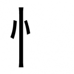
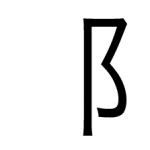

TextFugu Kanji Radicals, Part 3
“I never dared be a radical when young, for fear it would make me a conservative when old” - Robert Frost
So now you’ve gotten through 1-2 stroke radicals and 1-2 stroke kanji. If you think that was difficult (hopefully not that difficult), let me tell you about the kinds of kanji that most other resources make you go through. If you were using, say, a regular old textbook, you might come across “simple” / “beginner” kanji such as 食. The meaning of this kanji is very simple. It’s “eat,” and if you were a young child this is one of those words you’d probably need to know. We’re doing it a bit different on TextFugu, as you know. You won’t see that kanji for a while (despite its simple meaning), as we’re going from simplest kanji to most complicated kanji. That’s why we started with 1-2 stroke kanji and radicals… because they’re incredibly simple.
Now that we’re moving on to more strokes, you’ll notice things get a teensy-tiny bit more difficult (precisely one stroke more difficult). Each new level shouldn’t feel like it’s getting that much harder, because really, we’re taking small steps. In the end, this will get you much better results (and I imagine if you have used any other resource to try and learn kanji, you’ll have noticed how much easier this is, and how much more you’re retaining in that brain of yours).
It is time for 3-stroke radicals, though, so we should do that (and I should stop bragging about how awesome learning kanji here will be for you). As you know from the last time, even though it is important to learn all of the following radicals like the back of your hand (assuming you know the back of your hand quite well, that is), we won’t use all the radicals here right away. Some of them will pop up a bit later, and some of them will pop up immediately. This means you should keep reviewing, and focus on the stories that go with them so that you can remember them for a long, long time.
Let’s get to it!
3 Stroke Radicals
“I fear not the man who has practiced 10,000 kicks once, but I fear the man who has practiced one kick 10,000 times.” - Bruce Lee
As you’ll quickly notice, things are a tiny bit more difficult. Remember, stick to the stories and really imagine them (pretend you’re a part of them!). I’ll help guide you along, but you have to push yourself to use that imagination of yours. It’ll get faster as long as you put in the effort now!
Really Sweet Water Slide
Do you see the drop of liquid at the top? That’s the water that will help to propel you down this monster slide. In fact, this slide is so big that there’s even a reinforcement holding it up (in the bottom left). When you think about this radical (or see it), you should think “drop of liquid” then massive slide. Put those together and you’ll have yourself a really sweet water slide.
Mouth
For our intents and purposes, whenever you see a box (remember how there are no circles in kanji?) think of it as a mouth. In fact, the kanji that parallels this radical also means mouth, so it’s not much of a stretch. This radical even looks like a mouth, right? Just imagine someone with a really wide gaping square mouth.
Grave
Do you remember the ground radical (一)? That makes up the ground part of this grave. On top of the grave is a cross (because that’s what people often put on graves, right?). Take note that the ground part is bigger than the width of the cross. This is important for the next radical!
Samurai
This radical looks just like the previous radical, right? The only difference is that the cross is wider than the ground part. That’s because samurai get bigger crosses, because everyone thinks they’re so darn cool. Remember, a cross that is smaller than the grave below it is just a regular old grave. When the cross is bigger than the grave below it, then it’s a Samurai buried there.
Winter
Do you remember the stool radical (又)? This is a stool with a slide on it. When things are frozen and cold, you slide right off them. When you try to sit on this stool, you slip right off because of the slidey part. You shouldn’t have put your stool outside in the winter snow!
When you see this radical, you’ll see a stool with a slide on it. When you see that, it’s important to think “why is there a slide here?” and then remember the story. It’s slidey and slippery because it’s frozen. Why is it frozen? Because it is winter.
Evening
Do you see the enclosure radical in there? This is the enclosure radical but it’s holding on to a drop of water inside of it. Night air tends to be colder and tends to hold on to (i.e. enclose) moisture better, giving this radical the meaning of “evening.”
Big / Large
Look at this guy. It looks just like a big dude. You probably drew stick figures like this big guy. If it’ll help you to remember this radical, try writing a huge version of him, taking up a whole piece of paper.
Woman / Female
This radical looks like two stacked X’s. In chromosomes, XY = male, XX = female. So just remember, XX = female, which is what this radical is too!
Child
When you look at this radical, you should see the kanji for “finish” (了). This “finish” kanji is stabbed through by a one (一). With one month finished in the mother’s womb, a child still looks pretty weird. This is a pictogram of a “child.” You can see the arms developing and stretched out, the weird head shaped like a katakana マ (because he/she still needs his “ma”), and a squiggly at the bottom because he’s not fully developed down there yet.
Luckily, you’ll see this radical so often it’ll get really hard to forget. This radical means child, and it’ll be everywhere.
Pot Lid
Do you remember the “kettle lid” radical? This is just like that but there are sides to this, to help clamp things down. You need the side clamps for cooking really big things (in pots, of course), making this radical the “pot lid” radical. Remember, big things require clamps on the side to keep the lid on while they’re really boiling. Big things are cooked in pots, which means this is a “pot lid.”
Measurement
This radical consists of a slightly deformed “ten” radical and the “drop of liquid” radical. What will ten drops of water get you if you put them side by side? How far will that measure? Think about using the liquid drops to measure things. It’s important that you have ten of them, though, since that’s a part of the radical that helps you remember the meaning!
Little
You probably recognize the two radicals that make up this 3-stroke radical. There are “fish legs” and a “barb” inside of them. That means the barb is going right through the entire fish (with the fish legs!). You can’t see the fish part up above (only the legs), but you know it’s going through the entire thing because it went in through the mouth and out the bottom past the legs. The barb isn’t all that big, either, which means this is a small fish, because only a small fish would be able to take the entire barb like that.
Triceratops
See how this radical consists of three horns? What animal has three horns? The number one thing that probably pops into your mind is a triceratops, the awesome 3-horned dinosaur.
Deranged Big Guy
I bet if you remember the “big dude” from earlier (大) you’ll see that this one looks pretty similar. The only difference is the right side leg, which seems a bit broken and bent. That’s why this is the deranged big guy. If you look closely, you might even notice that he’s wearing a kettle lid on his head… something’s a bit off with this guy.
Flag
This totally looks like a flag, right? The wind must be strong, too, since the pole is a bit bent and the flag part is waving perfectly horizontal. The flag is blowing to the right, because as usual, you’re standing in front of the Pacific Ocean somewhere on the West Coast of America. The wind blows from the ocean which is why the flag faces to the right.
Left-hand
Unfortunately, being left-handed was a bad thing to be back in the day in Japan (and still a little bit now! Sorry left-handers!). That’s why left hands are depicted with such a weird pictograph! This left hand only has three fingers (because obviously left hands are only worth 3/5ths of a right hand), and the middle finger is higher up because… well… this left-hander is upset about being left handed, I guess. Take note of the arm coming out from the bottom, too, that’s important, especially after you learn the next radical!
Mountain
Do you see the mountain shape here? Okay, so it’s not as perfect as the volcano radical (八), but you can see it, right? If you drew a line from the top of the middle line down to the tops of the side lines, you’d make a perfect mountain shape. The middle line is always taller, that’s important!
River
This one looks a lot like a river. It even widens at the bottom as if it’s the mouth of the river, too! The line going down the middle is just a line showing the movement of the water!

River Bend
Same three lines as the river radical above, but this time it’s bending. That’s why we’re calling this one the river bend.
Construction
Do you know those big iron girders they use to make things when constructing something? This looks like the end of one of those, which is why this radical means construction.
Snake Skull
Can you see the snake skull in this one? The jaw is at the bottom, and the top part is its head.
Hanging Towel
This is a hanging towel, do you see it? The middle line (stick) is the bar holding the towel, and the upside down box is the towel part hanging over it. It’s a side view of a hanging towel, but when you see this you should see that something floppy is hanging, and that should help you remember that it’s a hanging towel there.
Dry
Before we had a stick hanging up a towel. Now we have a stick with two horizontal racks on it. This means it could (if it wanted) hold twice as many towels, which means things become dry a lot faster. This hanging rack is for drying things.
Pile of My Stuff
Do you see the I/me radical in there (ム)? Now, pile a little more on top and you have a pile (of my stuff). It’s a pile, and it has the me radical in it, which is why it’s a pile of my stuff and not just a random pile.

Man On Cliff
You probably remember the cliff radical. Now there’s a man on the cliff, standing, looking out in to the ocean (which is always on your left, remember?!).
Big Step / Stride
This one kind of looks like the description associated with it, though you might have to stretch your imagination a bit. Remember, you really only have to recognize the radical, writing it isn’t so important. There’s a big leg going off to the right, and you can think of it as taking “3″ (see the big 3?) steps somewhere.
Twenty
There are two “ten” radicals making up this radical (see them side by side). When combined (10+10), you have twenty!
Ceremony
If you look at this one, it looks like a guy with one leg and a “drop of liquid” (i.e. he had quite a few drinks). This was a fun ceremony, apparently.
Busted up stick
Broken in three places!
Double Knocked Over Boxes
This set of two boxes was knocked over. Oh shame. Since there was more weight involved, they got broken too (which is why they fell to the left, because broken boxes always fall to the left).
Stuck Ninja Star
This ninja star got stuck in the ground. Aw shucks.
Hair
These three long lines are three pieces of hair. They look just like hair, don’t they?
Linger / Loiter
See the “important person” radical in there? That important person has a slide above their head, which means they’re waiting to go up the stairs and slide down it. Even important people have to wait in line (linger, loiter) to ride down a slide like this.

Fish Legs Stick
This is a stick with fish legs attached to it.
Spiky Stick
See the spikes coming out of that stick? Wait a sec, that’s not even a stick, that’s a barb! Dang, that stick is spiky in every way possible.
Liquid
We have water / ice in there, plus another drop of liquid. Once you get to that point, you’re really talking about a lot of liquid, of some kind. Anyways, it’s liquid, and lots of it.
Animal
This animal tail has a couple of hairs coming off of it.
Grass
See the grass coming up from the ground? Also, do you see the roots going down into the ground? This is grass, and looks just like it!

Butcher
B is for Butcher.
Alligator Skull
Similar shape to the snake skull, but this one has more teeth. That’s why it’s an alligator skull.
Death
When a kettle (with a kettle lid) explodes while you’re cooking it, there’s a good chance you might die. This radical means “death,” and so does the parallel kanji that goes along with it.
Reinforced Stairs
This is a lot like the stairs we looked at earlier – this time, though, they’re way reinforced. See the reinforcement beam?
Reinforced Enclosure
Do you see the enclosure? It’s just like that, but now we’re going to reinforce it with another beam, so it can enclose even more difficult things!
Practicing The Radicals
Go through the above radicals and make sure you can recognize a good percentage of them. Then, download the Radicals 3 deck and import it into your Radicals Deck.
After you’ve gone through and reviewed + practiced your radicals, you can move on.